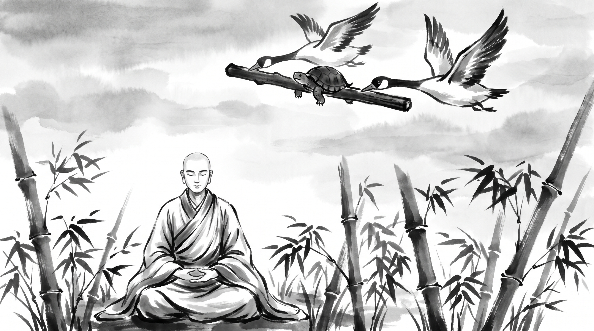

The Clamped Jaw: How One Word at the Wrong Moment Undoes a Rescue

The morning mist drifted quietly through the bamboo grove, parting around the stone meditation terrace of the monastery. Tall green stalks swayed in the cool mountain wind, whispering against one another in gentle rhythm. Rohan, a master surveyor and chief keeper of the river granary lock-gates for the imperial boatmen's guild, sat upon the smooth granite step with his shoulders slumped and his hands trembling in his lap. The hollow ache of self-inflicted ruin shadowed his eyes.
Across from him sat the Monk, peaceful and composed in his saffron Kasaya robe draped over one shoulder. His head was cleanly shaved, his posture upright and effortless, free of any ornament or ostentation. He observed the turmoil radiating from the young craftsman before speaking in a low, resonant tone.
"You bear the grief of a traveler who was carried across an abyss by wings, only to leap into the canyon by his own choice, Rohan," the Monk remarked gently.
Rohan pressed his knuckles into his forehead, exhaling a shuddering breath. "Master, three days ago, the central river lock-gates jammed at the height of the harvest, when the barges were heaviest. The canal backed up, several cargo barges took on water, and the grand council of merchants hastily called a tribunal of inquiry. I was directly accused of negligence. Yet two respected elders of the guild—our chief warden of waterways, Arjun, and the overseer of stores, Nandita—stepped forward to champion my defense. They spent the entire night inspecting the timber winches and canal seals, realized the failure was caused by rotten hemlock logs delivered by an upstream timber contractor, and agreed to escort me through the tribunal."
Rohan swallowed the dryness in his throat. "Before entering the council hall, Arjun took me aside and gave me one absolute command: 'Rohan, keep your jaws clamped shut. Nandita and I have already spoken with the elders. We will answer every hostile question, absorb the anger of the merchants, and present the repairs. No matter what provocation or insult is thrown across the floor, do not utter a single syllable. Let us carry you across.'"
"And did they carry you?" the Monk asked.
"They carried me with total mastery," Rohan confessed, his voice breaking with shame. "For the whole of the morning, Arjun and Nandita deflected every accusation. The council was nodding; the silver for the repairs was about to be granted. Then Kunal, a rival overseer who sought to absorb my waterway charter into his own warehouse syndicate, leaned forward with a mocking sneer. He looked around the assembly and scoffed: 'It is touching to see two venerable elders holding young Rohan's hand like a helpless child. If his craftsmanship were sound, he would not need senior wardens to do his pleading.'"
Rohan's fingers dug into the granite step. "My pride flared like dry straw caught in wildfire. I forgot Arjun's instruction. I forgot everything we had agreed. I sprang to my feet and shouted across the council: 'At least my lock-gates hold back the river floods, Kunal, unlike your rotten grain silos that spoiled half the city's barley last winter!' The hall fell dead silent. The high syndic struck his staff upon the cedar floor in disgust at my reckless outburst. Arjun looked at me with profound sorrow and lowered his eyes. The assembly disintegrated into shouting and bitter recriminations. The silver for the repairs was withdrawn, my waterway charter was stripped away, and this morning I was cast out of the guild. I was in the air, flying to safety, and my own tongue dropped me onto the rocks. Why is silence so unbearable when our ego is provoked?"
The Flight of the Geese in the Jataka
The Monk smiled with deep, compassionate understanding. He picked up a slender bamboo twig from the stone path, holding it horizontally between his fingers.
"Your sorrow is fresh, Rohan, but the weakness that caused it is chronic to human nature. In the Jataka Tales, in the ancient record preserved as the Kacchapa Jataka, there is told the story of a creature who met his doom through the very same folly."
"In a deep pool situated in the Himalayan foothills lived a tortoise named Bahubhani. In that same pool dwelt two wild geese, who became fond companions of the slow-moving reptile. But there came a year of severe drought. The rains ceased, and the mountain pool shrank day by day until the muddy bed cracked under the scorching sun."
"The two geese saw that their friend would soon perish. They approached the tortoise and said: 'Friend, this pool is dying. High upon Mount Cittakuta lies a vast, deep lake covered with lotus blooms, where the water never dries. If you wish, we can carry you there with us.'"
"The tortoise looked at the sky and then at his heavy shell. 'How can you carry me? You have wings to ride the wind, but I am bound to the earth.'"
"The geese replied: 'We can transport you through the clouds, provided you master your speech. We will hold the two ends of a stout wooden stick in our beaks. You must bite firmly into the middle of the stick with your jaws. Whatever happens, whatever you hear, you must not release your grip or speak a single word until we set you upon the shore.'"
"The tortoise agreed readily. The geese took the ends of the stick between their strong bills, the tortoise bit tightly into the center, and with powerful beats of their wings, the great birds rose above the mountain trees and soared into the high sky."
"They flew over forests, rivers, and cultivated fields, carrying their heavy burden toward the northern peaks. But as their flight path crossed directly over the bustling city of Benares, the citizens in the streets looked up in astonishment."
"A crowd gathered, pointing fingers and shouting in derision: 'Look above! Two clever geese are carrying an ugly tortoise on a stick! Look at that stupid creature hanging like a sack of turnips!'"
"The children laughed and clapped, while men mocked loudly: 'What a ridiculous sight! That slow-witted shell-bearer has to be carried like luggage by birds!'"
"High in the air, the tortoise heard the mockery. His temper flared. The laughter of strangers wounded his vanity beyond endurance. He felt a burning urge to shout down at the crowd, to assert his dignity, to tell them that these geese were his personal friends."
"Blind with indignance, the tortoise unclamped his jaws and shouted: 'If my friends carry me, what business is it of you miserable fools?!'"
"The moment his teeth parted from the wood, his words were swallowed by the wind. The geese could not hold him. The tortoise tumbled headlong through empty air, spinning down from the clouds until he struck the paving stones of the royal courtyard, shattering his shell into a hundred pieces."
"The Bodhisatta, serving as the chief counselor to the king of Benares, stood in the courtyard and witnessed the creature's fall. Turning to the king, he uttered this solemn truth: 'A man of loose tongue who speaks without measure meets destruction precisely like this tortoise. By a single untimely utterance, he threw away his salvation and smashed himself upon the stone.'"
What the Tortoise Teaches
The Monk set the bamboo twig down upon the granite.
"Look closely at how you fell, Rohan. When friends carry someone through a storm in the council, it is the flight of the geese all over again. Such a rescue has four weak points."
1. The Weight Falls on the Carriers
Carrying a man through a hostile assembly costs a great deal. Arjun and Nandita spent years of earned trust and goodwill with the elders to lift you out of trouble. While they carry you, their grip is strained. They need you perfectly still, so that all their strength can go into the flight.
2. The Enemy Throws a Stone at the Sky
Kunal's sneer was not an argument. It was a stone thrown deliberately at the tortoise. A clever rival knows that when the defence is sound and the defenders are winning, the only way to break the rescue is to provoke the one being rescued. He wagers that your pride is larger than your patience.
3. The Retort Feels Like Victory
What opened your mouth was the belief that a sharp answer settles the score. In a hall of elders, words spoken to defend pride never clear the speaker; they only show that his mind is unruled. When the tortoise shouted, the people of Benares did not admire his wit. They watched him fall. When you attacked Kunal's silos, the elders did not admire your fire. They saw a man who could not govern himself.
4. The Carriers Are Made Fools
The deepest cost was not Kunal's gain but your friends' loss. Arjun and Nandita staked their names on the claim that you were steady and worth saving. The moment you spoke, you made liars of them in front of the council. You forced them to let go of the stick.
The Monk's Counsel: Keeping the Jaw Clamped
"Master," Rohan said, bowing toward the stone floor. "The damage is done, but my life's work is not over. How does one learn to keep the jaw shut when every nerve screams to strike back?"
The Monk held up four fingers.
1. Agree on Your Silence Before the Doors Open
Before you enter any hearing where a friend speaks for you, settle with him who will hold the floor, and accept that your part is to answer only what is asked of your craft. On the wax of your writing tablet, before the session begins, write: "Today my only task is silence." When the insults come, look down at those words and keep your hands flat on the bench.
2. Ten Slow Breaths Before Any Answer
If you are questioned directly, never answer on the rebound of an insult. Breathe slowly through the nose, wait, and strip every angry word from your reply before it leaves your mouth. Answer only questions of measurement, timber, and water level. Let sarcasm pass as if it were spoken in a language you do not know.
3. Answer Lies with the Written Record, Later
The tortoise opened his mouth because he had no other way to defend himself. You have one. If a rival misrepresents your work, do not fight it in open debate. When the session ends, gather the inspection tallies and the timber merchant's sealed receipts, and send a short written account to the elders of the council before the next sunset. Let the facts break the accusation while your composure stays whole.
4. Go to Your Carriers Today
When your words have spoiled a rescue, your first duty is to the ones who held the stick. Do not hide in shame or explain yourself. Go to Arjun and Nandita before nightfall. Say plainly that you failed them, name what you have learned, and ask how you can help repair the damage without asking them to shield you again.
Source: Jataka Tales, Kacchapa Jataka, No. 215 (UNVERIFIED)
Rohan sat without moving as the breeze stirred the bamboo. The clamour of pride and panic in his chest had gone quiet. He bowed his forehead to the stone step, stood, and prepared to begin the slow work of earning back trust.
"The sky belongs to those who bite the stick in silence; the paving stones wait for the tortoise who cannot bear a fool's laughter."